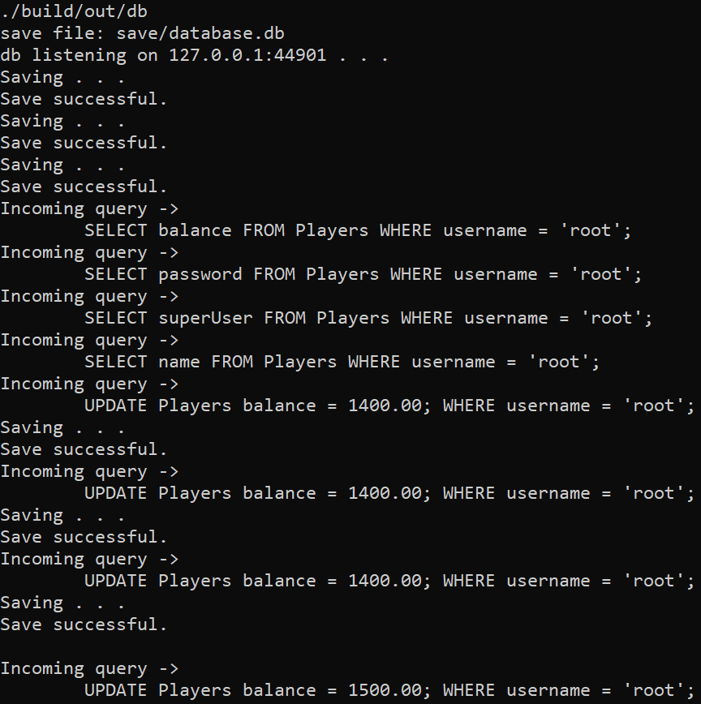

A C++ webserver with a database and minimal frontend that allows you to play the game Blackjack in the browser. The frontend consists of HTML/CSS/Javascript. The webserver code is cross-platform: It works for both Windows and Linux.
[ link to the Github repository ] 